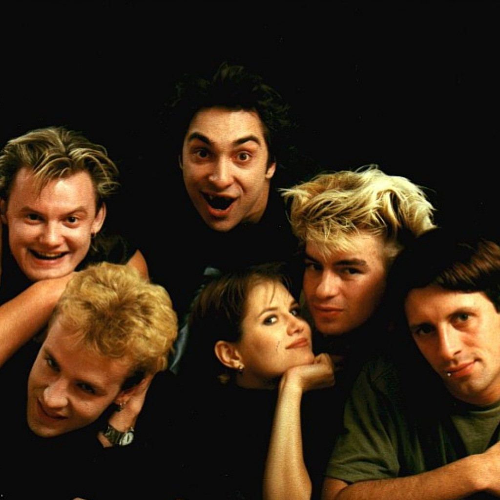

В 1988 году в Ленинграде у троих одноклассников — Михаила «Горшка» Горшенёва, Александра «Поручика» Щиголева и Александра «Балу» Балунова — возникла идея создания группы. Так появился проект с названием «Контора»[13], который был ориентирован на игру в стиле «панк-рок» с соответствующими текстами и музыкой. Знакомство Михаила Горшенёва с Андреем «Князем» Князевым произошло в 1989 году в реставрационном училище Ленинграда. Они проходили практику в Эрмитаже, где получили работу, закончив училище. Эрмитаж выделил реставраторам мастерскую на Миллионной улице, где они организовали первую репетиционную точку группы «Король и Шут»[14]. Годом спустя знакомство кардинально изменило концепцию группы[15]. Князев пишет на музыку тексты, представляющие собой разнохарактерные мини-истории, в основе которых лежат сюжеты из русского фольклора, фэнтези, мифов и легенд. Большинство историй носит характер «страшных сказок», иные — юмористичный, шутливый оттенок. Название «Король и Шут» группа взяла в 1990 году. До этого времени на обсуждение музыкантами выносились такие варианты, как «Зарезанный одуванчик», «Армагеддон», «Апокалипсис» и «Король Шутов», из которых последний и лёг в основу официального названия[16]. В 1991—1992 годах на студии были записаны первые несколько песен группы: «Мёртвая женщина», «Охотник», «Король и Шут», «В долине болот», две из которых — «Охотник» и «В долине болот» — прозвучали по радио. Это был первый радиоэфир начинающей группы «Король и Шут»[17]. Первый раз перед публикой группа выступила в 1992 году в здании закрывшегося ленинградского рок-клуба на улице Рубиншейна, 13[14]. В то же время группа задумалась чтобы записаться на профессиональной студии. Они познакомились с хозяином заведения Михаилом Колчугиным. Записали четыре песни: «В долине болот», «Мёртвая земля», «Ауфидерай», «История о мёртвой женщине»[18]. В 1992 году в школе ритма Игоря Голубева, располагавшейся в здании Ленинградского рок-клуба на Рубинштейна 13, состоялось первое публичное выступление «Короля и Шута». Именно с этого момента группа «Король и Шут» ведёт своё летоисчисление[16][19]. В это же время группа записывает пять песен в студии Михаила Кольчугина: «Заскучал король», «Охотник», «Песня на английском», «Свечи гаснут», а названия пятой не было, но в будущем из неё получится песня «Возвращение колдуна»[20]. В 1993 году группа «Король и Шут» записала свой первый электрический магнитоальбом — «Истинный убийца» в студии Михаила Кольчугина. Группа записала 10 песен. За ударные сел младший брат Михаила Алексей Горшенёв, а за клавишные и на бэк-вокале — Дмитрий Рябченко. Вскоре после этого альбома Князь стал реже играть на бас-гитаре и перешёл на вокал. А бас-гитару взял Рябчик. Альбом никогда до 2018 официально не издавался, а до этого времени плёнка передавалась фанатами[21]. С 1993 года «Король и Шут» иногда выступали в клубе «Там-Там», популярном в неформальных кругах того времени[22]. Вскоре у группы появляется директор «Лысый»[кто?].В тот период группа впервые выступает в Москве[23]. В 1994 году в студии Михаила Кольчугина был записан неофициальный альбом «Будь как дома, путник…». Многие песни из этого альбома — это перезапись старых песен, но с более чистым звуком и профессиональными аранжировками. За ударные снова сел Поручик, но другие участники коллектива не были довольны его работой. С барабанами помог «Денс» Денис Можин. А сам альбом, который вышел ограниченным тиражом только на кассетах, долгое время считался среди поклонников раритетом[24]. Когда умер Горшок(Михаил Горшенёв),князь создал свою группу под названием:"КняZz",еще после смерти Горшка группа КиШ распалась,и участники группы создали свою группу под названием:"Северный Флот".

Это участники группы КиШ(Король и Шут) Это главные Вокалисты
Лесник
Кукла колдуна
Воспоминания о былой любви
Камнем по голове
Ели мясо мужики
Фокусник
Прыгну со скалы
Мертвый анархист
Проклятый старый дом
Дурак и молния
Охотник